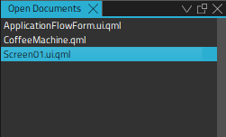
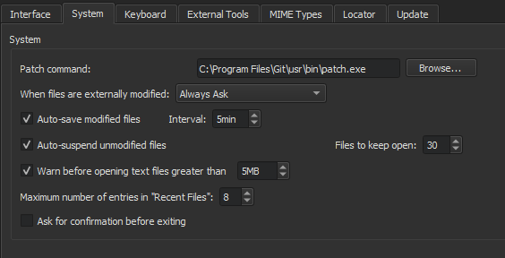

Open Documents
The Open Documents view displays a list of open documents.

You can use the context menu to apply some of the functions also available in the File menu and in the File System view to the file that is selected in the view.
In addition, you can:
- Copy the full path of the file or just the filename to the clipboard.
- Pin files to ensure they stay at the top of the list and are not closed when Close All is used.
Specifying Settings for Opening Files
To specify settings for opening files and handling open files, select Tools > Options > Environment > System:

- In the When files are externally modified field, select whether you want to be prompted to reload open files that were modified externally. For example, when you pull changes from a version control system.
- Select the Auto-save modified files check box to automatically save changed files at the intervals specified in the Interval field.
- Select the Auto-suspend unmodified files check box to automatically free the resources of open files after prolonged inactivity. The files are still listed in the Open Documents view. Set the minimum number of files that should be kept in memory in the Files to keep open field.
- Select the Warn before opening text files greater than check box to receive warnings about opening big text files.
- In the Maximum number of entries in "Recent Files" field, set the number of recently opened files listed in File > Recent Files.